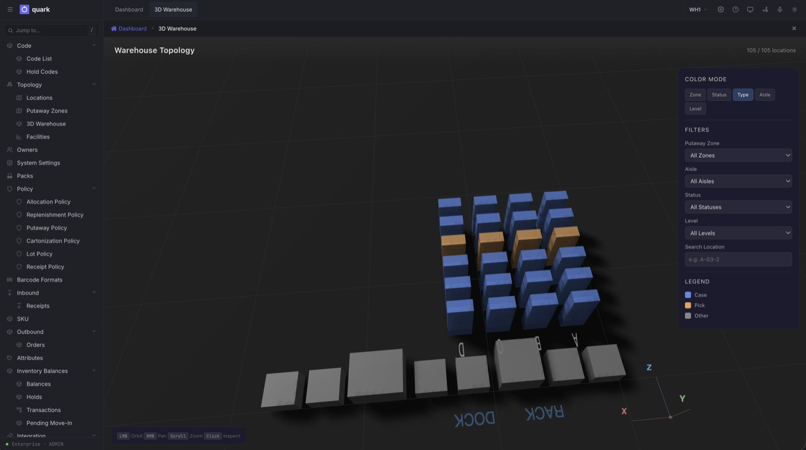
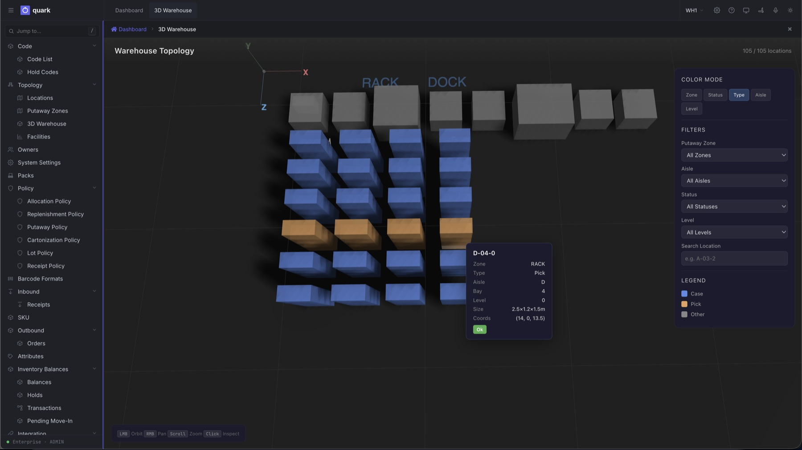
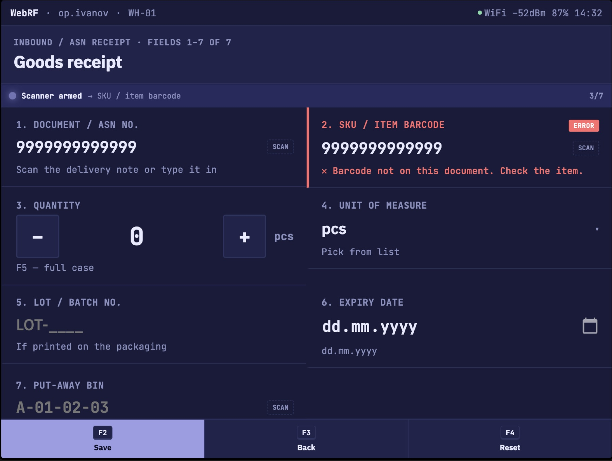
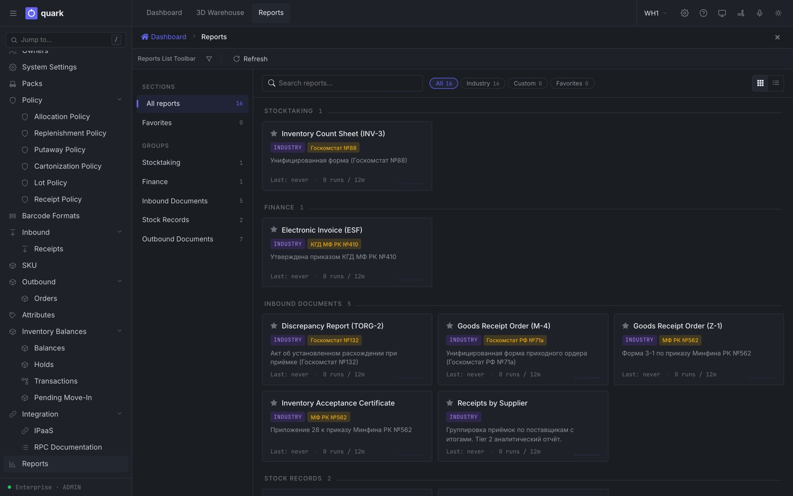
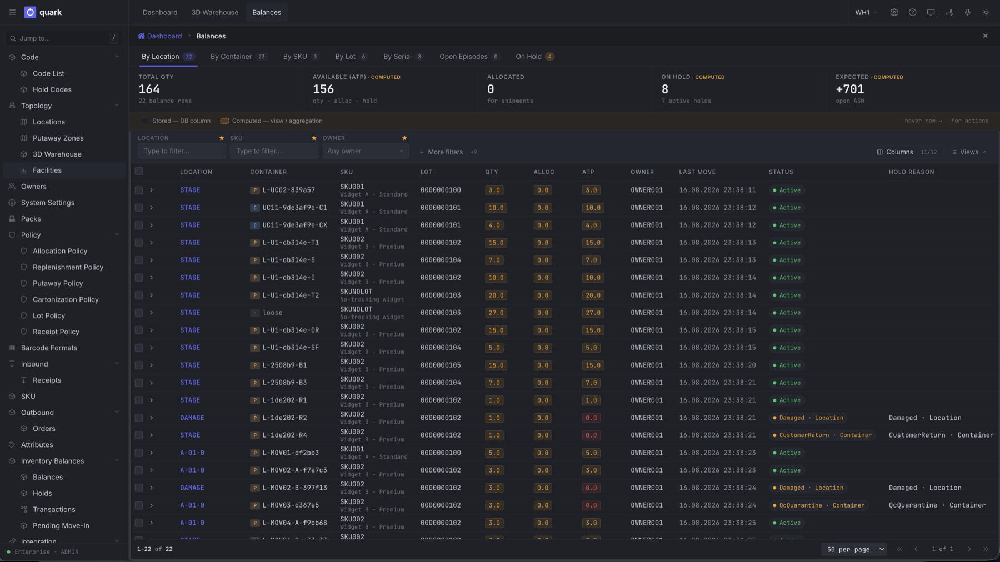
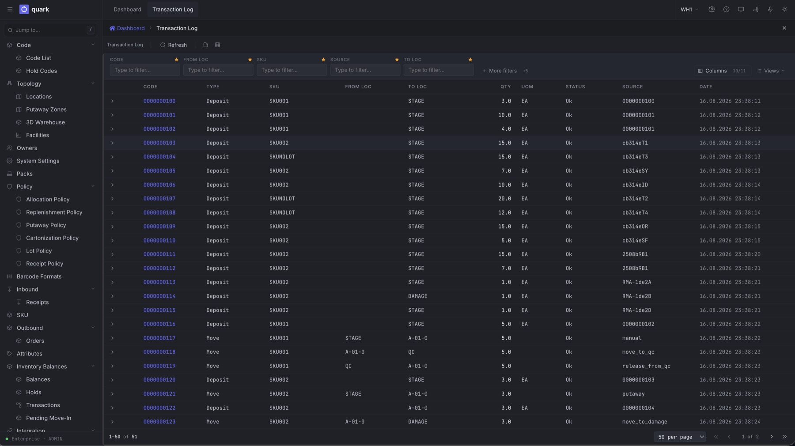
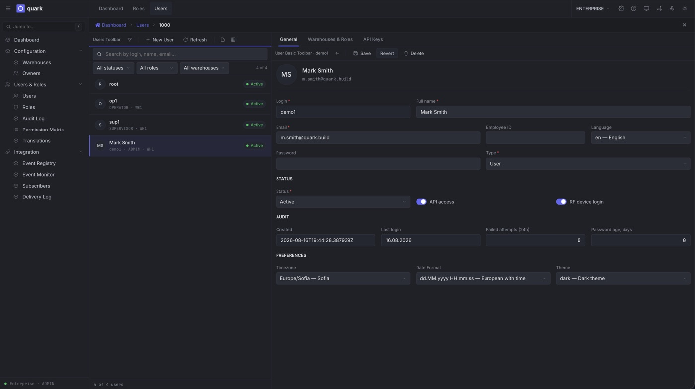
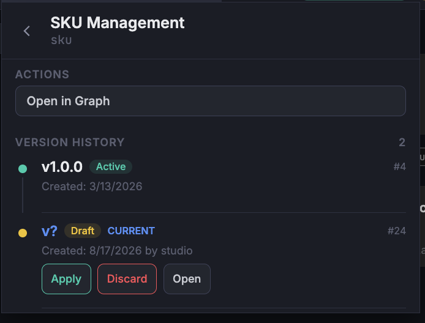
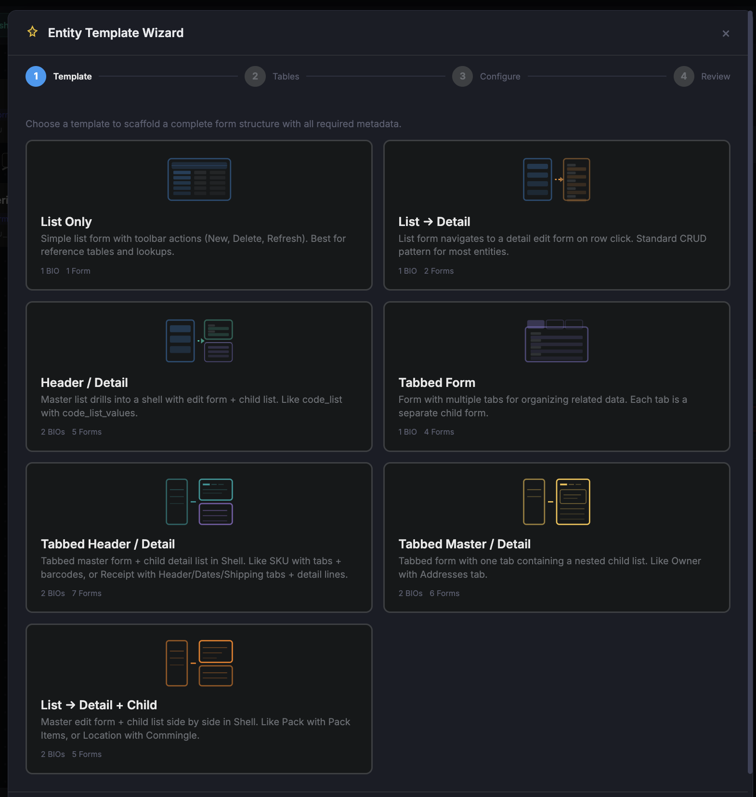

Supplied product screenshots of inventory, topology, reports and Studio. Screens show the interface; confirm workflow behaviour in an evaluation of the available build. Click any to enlarge.

Topology. Racks, aisles and zones in the supplied warehouse view.

Any bin, inspected. Zone, type, aisle,
bay, level, dimensions.

RF validation. A terminal screen displaying a validation message.

Report library. The supplied screen lists warehouse document templates. Confirm output and jurisdiction requirements during evaluation.

Balances. Inventory views with quantity, owner and hold information.

Movements. Transaction rows with warehouse movement reasons.

Identity. API keys and RF device logins sit
beside human accounts — because agents and scanners
are actors too.

Version history. One active version, one
current draft, and three ways to end it — apply,
discard, open.

Scaffolds. A template wizard listing business-object and form counts.